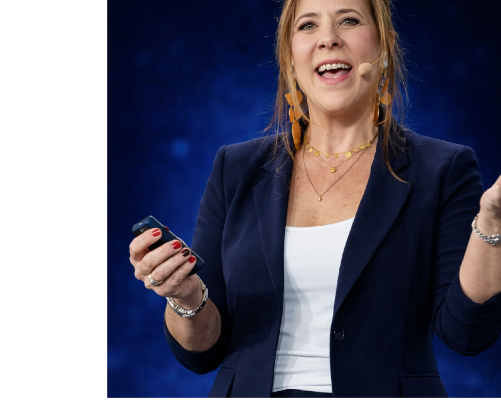

Save existing stage photo toKeynote Speaker · Business Transformation Expert · Author
MBA · Simon & Schuster Author · 40+ Years in Practice · Adjunct Professor
"The real problems in businesses aren't on the balance sheet.They're in the room."
Strategy isn't the problem. Execution isn't the problem. People are.
She sees the elephant in the room.Then says what no one else will.
There is always an elephant in the room. Jocelyn Greenky sees it the moment she walks in. Then she does what almost no one in her position is willing to do: she names it out loud — with precision, wit, and the calm of someone who knows it always gets better from here.
Known as a professional business "fixer," Jocelyn is a keynote speaker, business strategist, author, Adjunct Professor, and Interim CEO with more than 40 years of experience working with Fortune 500 companies, family enterprises, mid-sized businesses, and startups. She earns the trust of founders and global CEOs alike — because she doesn't hand you a report and leave. She takes the wheel.
What makes Jocelyn different on stage isn't simply what she says — it's what she allows to happen after she says it. The silence. The nervous laughter. The moment when a room full of accomplished people realizes they've all been thinking the same thing and no one said it until now.
Her sessions deliver one outcome: people walk out having said the thing they've been avoiding — and knowing exactly what to do next.
"She walks into the room. She names the elephant.Everything gets easier from there."
The post-pandemic workplace hasn't settled — it's accelerated. Generational succession is creating friction at every level. AI is disrupting who does what and who gets credit. Women are carrying organizations while fighting for a seat at the table. Reputation has never been more fragile, or more valuable. Family businesses are navigating transitions with no roadmap and too much emotion.
Jocelyn doesn't talk around these tensions. She walks straight into them.
Available as keynote (45–90 min), half-day masterclass, or full-day masterclass. Every presentation customized to your audience and goals.
"Some presentations can be banal. Yours was informative and exciting. Your excellence has inspired me."Thomas Dean, Founder, Relentless Value · EPI Conference
"After hearing Jocelyn speak at Villanova, I knew that students, faculty, and staff at Drexel would love her. Her insight is laserpoint accurate to the realities of being successful in the work environment."Ann Wilson, Booking Client · Drexel University
"She brings structure and objectivity to complex family business dynamics. Invaluable when the stakes are real."Dr. Robert Rioseco, Family Business Leader
"Jocelyn Greenky is an outstanding guest speaker. She engages students with equal parts humor, candor, and insight, and always delivers a thoughtful presentation on generational challenges in the workplace."Andrew Goldman, Adjunct Professor · NYU
"I've been working with Jocelyn for almost 20 years. Her ability to implement a roadmap has been instrumental in achieving success."Stuart Brownstein, President · Colin Cowie
"Sider Road is a change agent. She re-constituted our support staff, reworked all workflow, and gave us a clear structure."Dean Steinman, CEO · Presentation Multimedia
"She turns complex problems into clear, actionable solutions. Instantly."Zoe Hoare, Founder
Viacom · EY · Bloomberg
KPMG · PwC · Avon · Kraft
BoFA · Material Bank · HBO
iNDEMAND · WSJ · General Foods
Hachette Filipacchi
NYU · Columbia · Drexel
Villanova · Syracuse
Queens College CUNY (Adjunct)
United Nations
ProMAXBDA
Ongoing: EPI keynote 3+ yrs
Simon & Schuster (Author)
CNBC · CNN · Fox News
Forbes · Fast Company
New York Times · USA Today
Washington Post · WSJ
HuffPost (10 articles)
Stage reach across North America, South America, Mexico, and Europe. Available virtual for any timezone.
We spend 90,000 hours of our lives at work. Yet our education system never arms us with the tools of effective communication, performance, and political savvy needed to thrive. The Big Sister's Guide became the book people press into the hands of everyone they care about — a three-book deal with Simon & Schuster, bought in the first week the proposal hit the market.
Your reputation is your most consequential — and most neglected — professional asset. In her forthcoming book, Jocelyn makes the case that reputation isn't what happens to you. It's what you build, decision by decision, conversation by conversation.
Leaders who design their reputation deliberately are 3× more likely to be approached for leadership roles, earn 10–20% more, and generate 50% more business referrals than those who leave it to chance.
Strategy isn't the problem.
Execution isn't the problem.People are.
MBA, Organizational Leadership — with distinction
B.S., Syracuse University
Adjunct Professor, Queens College CUNY
First grant awarded to both an adjunct professor and a woman in the master's business program for research in psychological safety.
Digital Global Editorial Director, Hachette Filipacchi
COO, Colin Cowie Lifestyle
CEO, BriteBean Technology
CEO, Ortho Marketing
Branded TV + Syndicated Radio Producer, Wenner Media (Rolling Stone parent)
Consultant: Material Bank, WSJ, HBO, iNDEMAND
45–90 minutes. Customized to your audience and theme. Ideal for conferences, corporate all-hands, and annual meetings.
3–4 hours. Deeper dive with group exercises, Q&A, and working sessions. Ideal for leadership off-sites and executive retreats.
6–7 hours. Comprehensive program with frameworks, application, and live coaching. For teams who want lasting change.
Custom series over weeks or months. For corporate L&D programs, MBA cohorts, and executive leadership tracks.
All assets cleared for use in promotional materials, social, and event programs. Email info@siderroad.com for direct file links or alternative formats.
Pick any three, or co-create with Jocelyn in the prep call. These spark her best material.
Page is print-ready. Cmd+P · Save as PDF. Or hand to a designer for one polish pass in Canva.